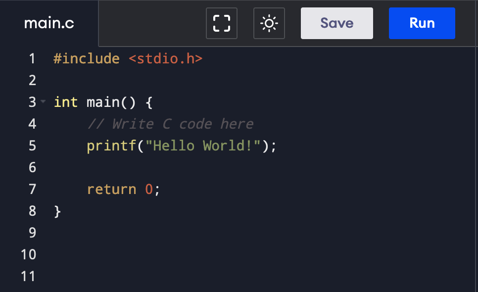

Low-Level Systems: C Programming

A core pillar of my technical skill set is my intense interest in C programming. A lot of students in my cohort dread their C assignments, but I've dedicated a lot of time to mastering the intricacies of manual memory management. It's the ultimate boss fight of first-year computer science.
I am highly comfortable working with memory addresses, passing data by reference, and strictly utilizing dynamic memory allocation. I frequently use malloc, calloc, and free to handle memory safely, ensuring my programs are efficient and completely free of memory leaks. I've also spent time learning how to build and utilize custom Makefiles to automate the compilation process for larger, multi-file assignments.
My university coursework has heavily focused on implementing fundamental data structures entirely from scratch. Building robust, error-checked implementations of complex structs, singly and doubly linked lists, stacks, and dynamic queues has given me a deep, structural understanding of exactly how data is stored and manipulated at the bare-metal level. When you understand pointers, every other programming language suddenly becomes much easier to learn.